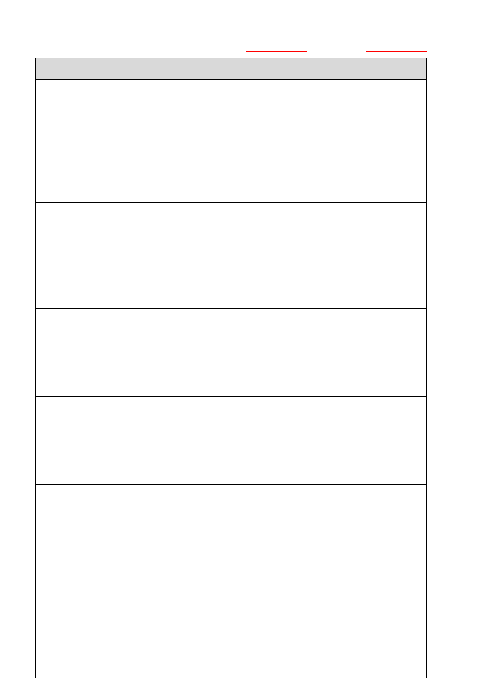
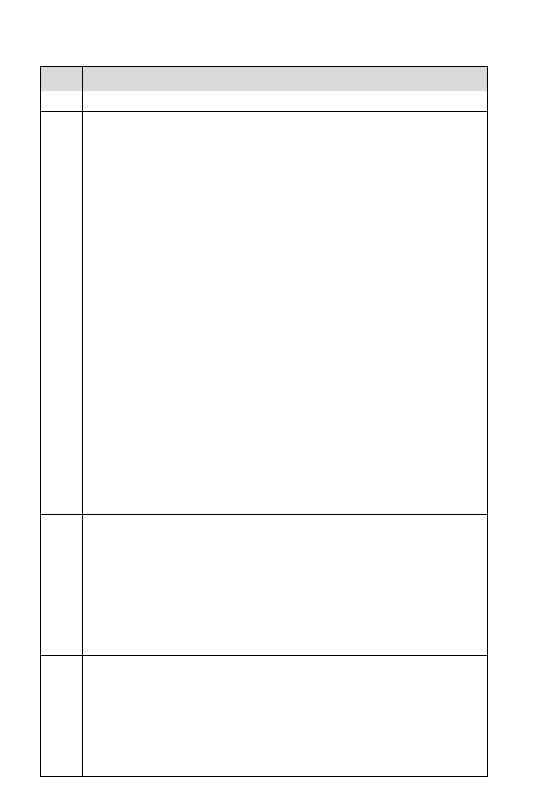
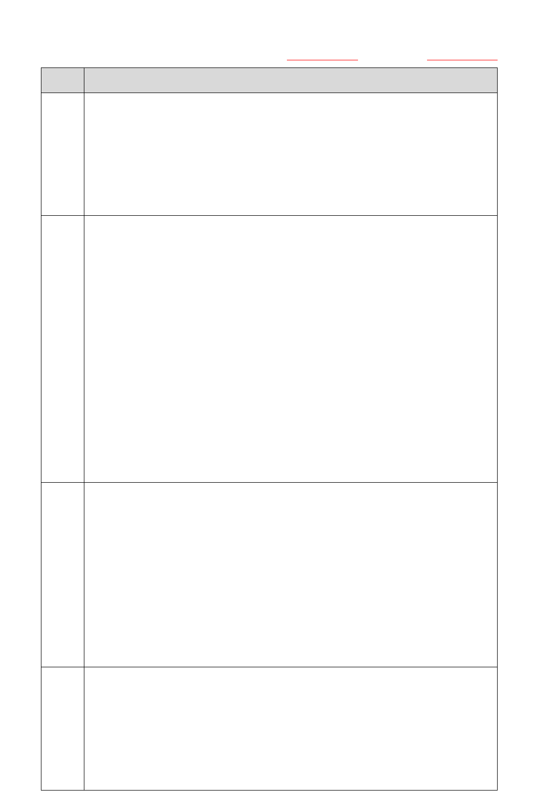
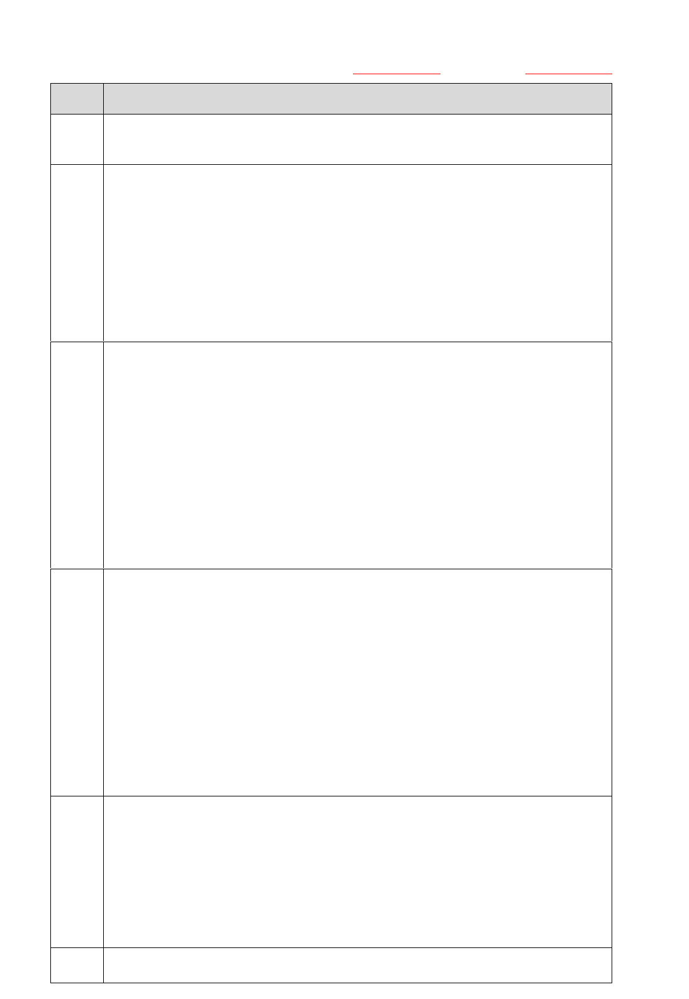
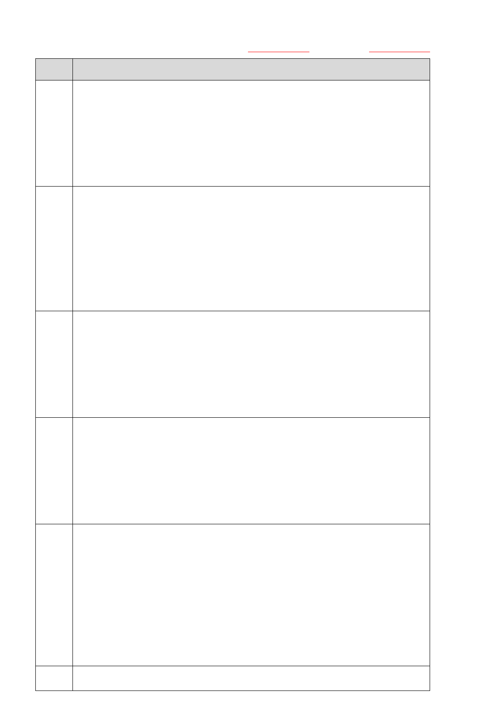
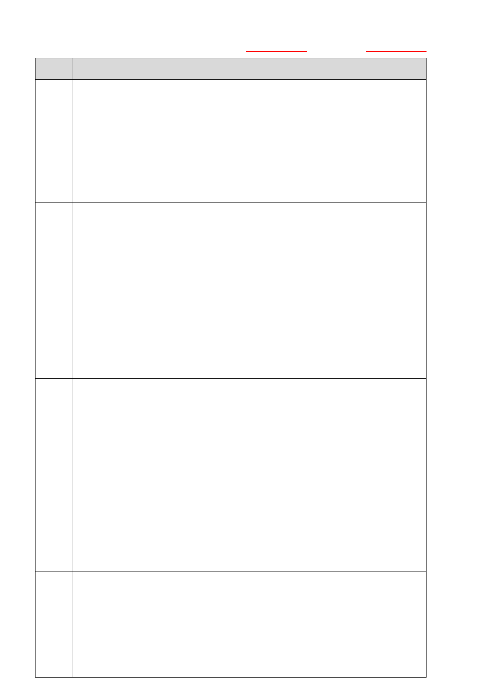
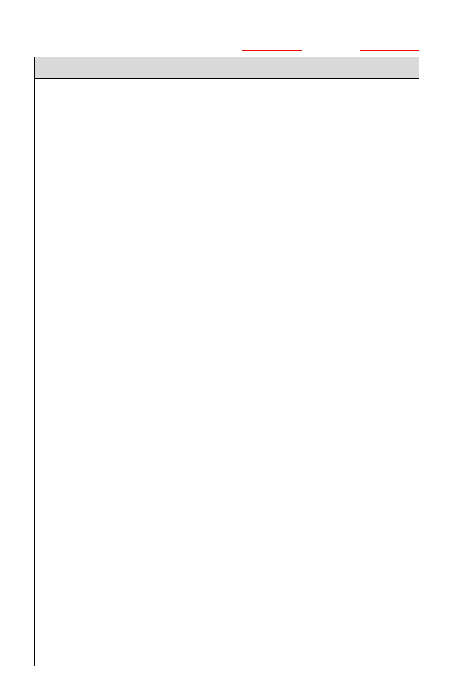
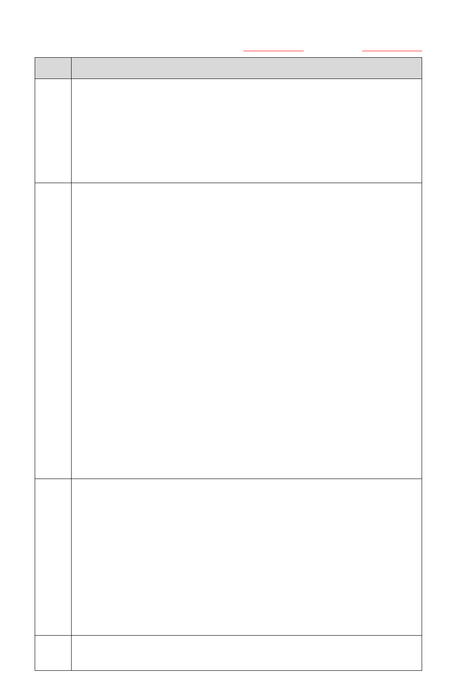
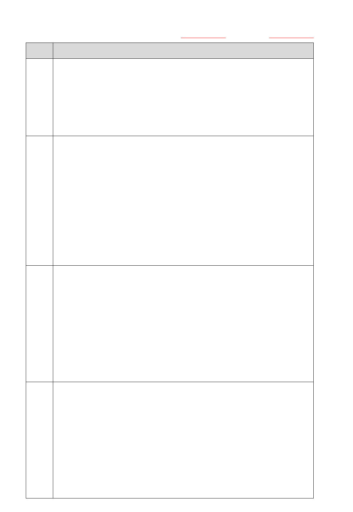

114 年第四次 AI 應用規劃師-初級能力鑑定【公告試題】
第一科：人工智慧基礎概論
考試日期：114 年 11 月 01 日 試題公告日期：114 年 11 月 20 日
第 1 頁，共 13 頁
答案
題 目
B
1.
在人工智慧系統的決策流程中，下列哪一種情境最符合「人在迴圈上
（Human-over-the-loop）」所強調的監督機制？
(A)AI 系統只能提供建議，人類需主動下達命令才能進行決策；
(B)人類對 AI 的運行進行日常監督，必要時可立即介入修正或干預；
(C)人類平時不參與 AI 的運作，僅在發生異常或重大錯誤時才接手控
制；
(D)AI 的所有判斷與行動在執行前，皆須經過人類逐一審核與批准
C
2.
下列哪一種特徵工程技巧，最適合將「星期幾」和「24 小時制時間」
這兩個欄位結合，以預測通勤時間？
(A)One-hot 編碼（One-hot encoding）；
(B)正規化（Normalization）；
(C)特徵交叉（Feature Cross）；
(D)寬深模型（Wide and Deep）
D
3.
關於 ETL（Extract-Transform-Load），下列敘述何者為正確？
(A)E 表示將資料直接儲存至目標儲存庫；
(B)ETL 的處理順序可以自由調整為 TEL；
(C)L 表示將目標儲存庫經過反加密處理載入資料；
(D)T 包括資料的清理與排序
C
4.
關於資料正則化（Regularization）L1、L2 方法，下列敘述何者正確？
(A)L1 權重個數愈多，愈可以提升模型的正確率；
(B)L2 稱為 Lasso 正則化；
(C)L1 運用減少權重的絕對值來控制模型的複雜度；
(D)L2 較 L1 正則化方法會將特徵權重趨近於零
D
5.
在機器學習中，「偏差與變異權衡（Bias-Variance Tradeoff）」主要用
來解決下列哪一類型的問題？
(A)因資料來源或收集方式限制，導致模型學習到的資訊不足；
(B)測試資料樣本與訓練資料高度重複，造成模型泛化能力評估失準；
(C)訓練資料中類別分布不均，使模型在少數類別上表現不佳；
(D)如何在模型偏差與變異之間取得平衡，以避免過度擬合或欠擬合
C
6.
在 Lasso 模型中，L1 正則化（Regularization）導致參數收斂為零的
原因為何？
(A)L1 正則化忽略目標變數；
(B)L1 對梯度有平滑作用；
(C)L1 對大係數懲罰較強，促使稀疏解；

114 年第四次 AI 應用規劃師-初級能力鑑定【公告試題】
第一科：人工智慧基礎概論
考試日期：114 年 11 月 01 日 試題公告日期：114 年 11 月 20 日
第 2 頁，共 13 頁
答案
題 目
(D)L1 會轉換損失函數為非凸形
B
7.
貝氏分類器（Naive Bayes Classifier）常被應用於文字分類、垃圾郵
件過濾等場景。依據模型特性，它最適合歸類於下列哪一類？
(A)透過直接學習輸入特徵與目標標籤之間的邊界或關係來進行分類
的模型；
(B)透過建構資料的整體分布，並利用條件關係進行推斷和分類的模
型；
(C)側重探索資料中樣本間的相似性，將資料自動分成不同群組的模
型；
(D)透過試錯學習，根據行動結果的獎勵或懲罰來優化決策策略的模型
B
8.
為提升生成式 AI 系統回應的語境一致性，常會結合哪類模型技術？
(A)決策樹分類器（Decision Tree Classifier）；
(B)條件語言模型（Conditional Language Model）；
(C)強化學習 Q-learning 函數模型；
(D)基因演算法（Genetic Algorithm）
B
9.
根據 2025 年 9 月行政院通過之《人工智慧基本法》草案，政府推動人
工智慧之「創新實驗環境」制度，主要參考歐盟的何種制度？
(A)Data Protection Impact Assessment；
(B)Regulatory Sandbox；
(C)AI Trust Label；
(D)AI Ethics Review Board
C
10.
根據《金融機構運用人工智慧技術作業規範》，金融機構須建立內部治
理架構，並指定專責單位或人員負責推動及管理人工智慧事務，下列何
者並非規範所明訂須落實的治理措施？
(A)辦理人工智慧人才培育；
(B)清楚了解生成式 AI 技術之運作模式；
(C)每日公布人工智慧系統運作狀況；
(D)指派高階主管或委員會進行監督管理
B
11.
下列哪一類問題最適合使用非監督式學習（Unsupervised Learning）
來處理？
(A)根據已標記的醫療影像訓練模型診斷疾病；
(B)根據使用者行為將用戶分群，以優化行銷策略；
(C)透過已知交通事故記錄預測未來事故發生機率；
(D)根據歷史股價預測未來股市的走勢

114 年第四次 AI 應用規劃師-初級能力鑑定【公告試題】
第一科：人工智慧基礎概論
考試日期：114 年 11 月 01 日 試題公告日期：114 年 11 月 20 日
第 3 頁，共 13 頁
答案
題 目
A
12.
下列哪一種圖表最適合用來呈現並分析「兩個數值型變數」之間的關
係，例如觀察身高與體重的相關性？
(A)散佈圖（Scatter Plot）；
(B)折線圖（Line Chart）；
(C)直方圖（Histogram）；
(D)長條圖（Bar Chart）
D
13.
下列哪一項應用情境與機器學習類型搭配正確？
(A)在醫療影像資料中，僅有少部分影像有專家標註診斷，其餘大多數
影像未標註，研究者結合已標註與未標註資料來建立模型 — 監督式
學習（Supervised Learning）；
(B)在自駕車模擬環境中，模型透過試駕獲得「是否安全通過路口」的
獎勵或懲罰訊號，逐步調整決策策略 — 非監督式學習（Unsupervised
Learning）；
(C)在顧客購買紀錄中，利用已知的「顧客是否流失」標籤，訓練模型
以預測新顧客未來是否會流失 — 強化式學習（Reinforcement
Learning）；
(D)在股票市場資料中，輸入歷史股價序列，嘗試將未來可能走勢劃分
成若干「上升型、盤整型、下降型」群組，無需使用任何標籤 — 非監
督式學習（Unsupervised Learning）
C
14.
某企業分析團隊正在處理一組近兩年的營運與銷售數據，共有四個部
門提出了各自的分析需求，請判斷哪一個最接近「預測性分析
（Predictive Analysis）」的特性？
(A)視覺化所有產品線過去月銷售走勢與標準差，觀察其分佈情況與波
動程度；
(B)藉由資料比對分析，找出去年母親節促銷失效的地區與品類組合；
(C)建構模型推算下一季的主力商品銷量，以規劃備貨與倉儲資源配
置；
(D)透過熱圖分析廣告投放成本與訂單轉換率之間的潛在關聯性
A
15.
某模型使用 K-近鄰演算法（KNN）進行分類，K 設為 3。 一筆新的測
試資料輸入後，與其最接近的 3 筆資料的類別如下：鄰近樣本 1：類別
A；鄰近樣本 2：類別 B；鄰近樣本 3：類別 A。請問模型會將這筆資料
預測為哪一類別？
(A)類別 A；
(B)類別 B；

114 年第四次 AI 應用規劃師-初級能力鑑定【公告試題】
第一科：人工智慧基礎概論
考試日期：114 年 11 月 01 日 試題公告日期：114 年 11 月 20 日
第 4 頁，共 13 頁
答案
題 目
(C)類別 A 與 B 各一半，無法分類；
(D)類別 A 或 B，視距離遠近加權而定
B
16.
某團隊想採用循環神經網路（Recurrent Neural Network, RNN）建構
長期氣候數據的預測模型，以下哪一項敘述最符合使用 RNN 可能會遇
到的挑戰？
(A)RNN 無法處理可變長度的序列輸入，因此在實務上限制極大；
(B)RNN 在長序列訓練中可能出現梯度消失，影響模型效果；
(C)RNN 無法捕捉時間上的依賴關係，因此預測準確度低；
(D)RNN 只能用於分類任務，不能應用於時間序列預測
A
17.
一間金融科技公司設計一款智慧投資系統，該系統會根據市場變化自
動決定「買進」、「持有」或「賣出」的行動，並根據每次交易後的盈虧
結果，逐步優化下一次的投資策略。整個過程中，系統不依賴事先標記
的資料，而是根據歷次行動獲得的獎勵進行調整。請問此系統最可能採
用哪一種學習方法？
(A)強化式學習（Reinforcement Learning）；
(B)監督式學習（Supervised Learning）；
(C)非監督式學習（Unsupervised Learning）；
(D)遷移學習（Transfer Learning）
C
18.
關於 Q-Learning 與 Deep Q-Learning，下列敘述何者最正確？
(A)Q-Learning 與 Deep Q-Learning 的差異在於是否使用標記資料作
為學習基礎；
(B)Q-Learning 可處理任意維度的狀態空間，因此比 Deep Q-Learning
更靈活；
(C)Deep Q-Learning 透過深度神經網路近似 Q 值，避免了 Q 表在高維
空間中難以擴展的問題；
(D)Deep Q-Learning 無法搭配經驗回放（Experience Replay），因為
會導致樣本順序被打亂
A
19.
在訓練機器學習模型時，若任務為預測房價，應選用下列哪一種損失函
數（Loss Function）來衡量預測誤差？
(A)均方誤差（MSE）；
(B)交叉熵損失（Cross-Entropy Loss）；
(C)Hinge 損失（Hinge Loss）；
(D)KL 散度（Kullback-Leibler Divergence）
A
20.
某醫院希望開發一個系統，根據患者的年齡、血壓與 BMI 等資訊，預測

114 年第四次 AI 應用規劃師-初級能力鑑定【公告試題】
第一科：人工智慧基礎概論
考試日期：114 年 11 月 01 日 試題公告日期：114 年 11 月 20 日
第 5 頁，共 13 頁
答案
題 目
其罹患糖尿病的機率（0~1），並依據預測值是否超過 0.5 做出風險警
示。下列哪一種模型最適合用於此分類任務？
(A)邏輯迴歸（Logistic Regression）；
(B)支援向量機（Support Vector Machine）；
(C)決策樹（Decision Tree）；
(D)K 平均演算法（K-means）
D
21.
某金融科技公司正開發一套違約風險預測系統，需大量處理不同客戶
的財務特徵資料。考量到資料特徵數量眾多，且希望提升預測的穩定性
與泛化能力，下列哪一種鑑別式 AI 模型最適合？
(A)邏輯迴歸（Logistic Regression）；
(B)支援向量機（Support Vector Machine）；
(C)決策樹（Decision Tree）；
(D)隨機森林（Random Forest）
C
22.
關於變分自編碼器（Variational Autoencoder, VAE）的運作流程，下
列何者敘述最為正確？
(A)解碼器的任務是將低維壓縮向量分類為不同類別；
(B)編碼器將輸入資料轉換為可視化圖像以利模型學習；
(C)編碼器將資料轉換為潛在空間表示，解碼器再重建資料；
(D)編碼器利用最大邊際機率對資料進行異常點偵測
D
23.
下列何者不是我國數位發展部 AI 產品與系統評測中心對生成式 AI 的
評測項目?
(A)當責性；
(B)可靠性；
(C)隱私及資安；
(D)互動性
C
24.
在保持 GPT-OSS 模型架構不變的前提下，如果將模型參數量從 20 億提
升至 120 億，並假設有足夠的訓練資料支撐，下列敘述何者最正確？
(A)模型參數增加會線性提升效能，且即使訓練資料不變也不會遇到瓶
頸；
(B)參數越多模型推理越快，因為每層可以並行計算更多參數；
(C)較大的參數量能提升模型的表達能力與預測效能，但需足夠訓練資
料支持；
(D)增加參數量不影響記憶體使用，只會影響計算速度
C
25.
在自然語言處理任務中，為了減少訓練語料中偏見對模型的影響，下列

114 年第四次 AI 應用規劃師-初級能力鑑定【公告試題】
第一科：人工智慧基礎概論
考試日期：114 年 11 月 01 日 試題公告日期：114 年 11 月 20 日
第 6 頁，共 13 頁
答案
題 目
哪種資料處理策略屬於常見的「資料去偏（Data Debiasing）」做法？
(A)讓模型在訓練時隨機替換輸出，以抵消資料中存在的系統性偏差；
(B)增加模型的參數量，依賴更大的模型自動消除原始資料中的偏見；
(C)調整或擴充訓練語料，使不同群體或類型資料的比例更加平衡，避
免模型過度偏向出現頻率高的類別；
(D)對訓練資料施加額外正則化或噪音，使模型在學習過程中對偏見敏
感度降低
D
26.
在深度學習模型的微調（Fine-tuning）過程中，可能出現所謂的「災
難性遺忘（Catastrophic Forgetting）」。此現象最可能造成哪種情況？
(A)由於計算資源或訓練步驟不足，模型在微調過程中無法完整收斂，
導致學習效果受限；
(B)微調後模型的表現變得隨機，無法有效記憶新學到的模式與知識；
(C)微調後模型的部分權重產生偏移，導致模型無法針對較長的文字進
行回應；
(D)模型過度適應微調的資料分佈，逐漸遺忘先前預訓練所獲得的廣泛
知識，在原有任務或廣泛領域上表現變差
B
27.
在大型 Transformer 模型的效能優化過程中，常見的方法之一是「剪
枝（Pruning）」。下列哪一項最符合該方法的核心概念？
(A)將模型中所有權重按比例縮小，使其值更接近零，以降低計算量；
(B)移除模型中影響較小或冗餘的部分權重參數，以減少模型大小並提
升推理效率；
(C)在訓練時僅更新部分權重而將其他權重凍結，從而減少需要調整的
參數數量；
(D)根據注意力分數動態跳過處理部分輸入 Token，以減少每次前向傳
播的計算
D
28.
對非常長的輸入序列進行推理（Inference）， Transformer 模型推理的
主要計算瓶頸通常是什麼？
(A)模型輸出層產生文本的過程，因為每生成一個詞都必須重新訓練整
個模型一次；
(B)詞嵌入 (Embedding) 查找操作，因為其時間複雜度隨詞彙表大小
指數級增長；
(C)Softmax 函數的計算，因為對每個 Token 都需要執行繁重的運算；
(D)自注意力層的計算和其記憶體使用，因為注意力矩陣的大小隨序列
長度呈平方級增長

114 年第四次 AI 應用規劃師-初級能力鑑定【公告試題】
第一科：人工智慧基礎概論
考試日期：114 年 11 月 01 日 試題公告日期：114 年 11 月 20 日
第 7 頁，共 13 頁
答案
題 目
A
29.
在「可解釋人工智慧（Explainable AI, XAI）」領域中，LIME（Local
Interpretable Model-agnostic Explanations）方法最核心的應用目
的是什麼？
(A)解釋單一樣本（局部預測）的黑箱模型決策過程；
(B)全面提升黑箱模型整體的預測準確度；
(C)將黑箱模型轉換成完全可解釋的模型作為替代；
(D)用於生成大量擬真數據來替代訓練集
A
30.
在醫療診斷決策支援系統等高風險領域中，「可解釋人工智慧
（Explainable AI, XAI）」的核心價值最主要呈現在哪個面向？
(A)透過提供可理解的決策依據，促進患者與醫療專業人員對系統診斷
結果的信任與接受度；
(B)以可解釋性方法優化臨床資料蒐集與管理流程，從而降低整體醫療
作業成本；
(C)利用解釋機制增強模型預測的統計顯著性與準確度，使其在研究及
實務應用中更具科學性；
(D)透過提供透明化的運作過程，進而減輕臨床人員負擔，並提升醫療
服務的整體效率
D
31.
在金融科技公司的信貸決策系統中，導入反事實解釋（Counterfactual
Explanation）時，實際部署往往伴隨技術與監管挑戰。下列哪一項最
符合該情境下的核心挑戰？
(A)需要建立完整的客戶行為預測模型來估算建議改變的實施成本，並
整合到現有的風險管理系統架構中；
(B)必須使用聯邦學習技術保護客戶隱私，同時在分散式環境中計算跨
機構的反事實解釋結果；
(C)需要建構時間序列因果圖來處理客戶信用狀況的動態變化，並預測
未來可能的信用評分軌跡；
(D)生成的反事實樣本必須滿足特徵間的因果約束和業務邏輯約束，同
時確保建議的改變在現實中具有可操作性且符合公平放貸法規
B
32.
在統計推論中，若樣本來自母體但呈現明顯偏態分布，且樣本數有限，
下列哪一項策略最能減少推估母體參數的偏誤？
(A)直接使用樣本平均數與變異數估計母體參數，不做任何調整；
(B)增加樣本數並考慮使用分位數或中位數作為中心趨勢估計；
(C)將樣本隨機重新排列後，多次計算平均值以消除偏態影響；
(D)完全依賴樣本標準差來估計母體參數，忽略分布形態

114 年第四次 AI 應用規劃師-初級能力鑑定【公告試題】
第一科：人工智慧基礎概論
考試日期：114 年 11 月 01 日 試題公告日期：114 年 11 月 20 日
第 8 頁，共 13 頁
答案
題 目
D
33.
在工業物聯網架構中，進行設備預測性維護（Predictive Maintenance）
時，若面對異常事件發生頻率極低、樣本高度不平衡的時間序列資料，
下列哪一種方法最能兼顧模型穩定性與異常偵測效能？
(A)將每筆異常事件資料複製多次以提升模型對異常的辨識敏感度，搭
配全序列訓練模型（如 LSTM）；
(B)對時間序列進行差分與標準化後，使用傳統監督式學習模型（如
SVM）進行分類訓練；
(C)使用經過時間序列特化的 SMOTE 技術生成異常樣本，以平衡異常與
正常資料比例；
(D)採用基於重建誤差的自編碼器模型（Sequence-to-Sequence
Autoencoder）進行異常偵測，並僅使用正常資料進行訓練
C
34.
在零售業進行客戶行為分析時，資料倉儲中發現多個欄位儲存相同的
購買金額資訊（例如：amount_usd、total_price、transaction_value），
但其單位、命名慣例及格式不一致，進而導致特徵工程階段混淆模型輸
入。針對此種跨欄位語義重疊與結構冗餘問題，下列哪一種資料處理策
略最合適且具實務可行性？
(A)利用資料探勘技術自動選擇資料集中對目標變數最敏感的欄位，其
他欄位捨棄即可，避免過度清理干擾原始結構；
(B)保留所有相似欄位，交由高階模型（如 Gradient Boosting 或 Deep
Learning）自動學習特徵關聯，無需手動處理；
(C)建立欄位命名標準，統一金額單位與格式，進行欄位正規化與語義
合併，減少重複資訊影響特徵重要性估計；
(D)將重複欄位視為類別欄位，進行 One-hot 編碼（One-hot encoding）
後輸入模型，以避免數值誤導模型學習過程
D
35.
某大型零售企業準備將商品推薦模型上線，專案團隊在檢視訓練資料
時，發現部分商品類別（例如高價商品）樣本數量極少，而多數樣本集
中於低價商品。若此不平衡問題未妥善處理，下列何種狀況最可能在實
際推薦結果中發生？
(A)模型在預測時傾向輸出稀有類別，導致雖能捕捉到少數樣本，但精
確率（Precision）顯著下降；
(B)模型由於類別分布不均，難以建立有效的線性分離邊界，進而無法
收斂；
(C)模型過度聚焦於稀有類別樣本，導致對多數類別的預測能力下降，
整體效能受損；
114 年第四次 AI 應用規劃師-初級能力鑑定【公告試題】
第一科：人工智慧基礎概論
考試日期：114 年 11 月 01 日 試題公告日期：114 年 11 月 20 日
第 9 頁，共 13 頁
答案
題 目
(D)模型學到的決策邊界主要由多數類別主導，忽視了稀有類別，造成
該類別的召回率（Recall）大幅降低
C
36.
某電商資料團隊要協助行銷部門規劃再行銷策略。目前取得資料包含
使用者點擊、購買紀錄、流量來源與轉換率。若資料團隊希望先進行探
索性資料分析（EDA），下列哪一項最符合 EDA 的做法？
(A)建立隨機森林模型，預測使用者是否會完成購買；
(B)使用 K-means 對使用者群進行分群並立即制定對應促銷策略；
(C)繪製各類流量來源對轉換率的關聯圖，尋找潛在關係；
(D)對不同購物路徑設定統計假設並進行雙樣本 t 檢定
B
37.
某金融科技公司在利用歷史交易資料建立風險控管模型時，嘗試推估
整體詐騙交易比例。近期發現，樣本間存在明顯的時間序列相關性，導
致模型在實際偵測新交易時誤判率升高。若希望同時改善詐騙比例推
估的準確性並提升模型的穩健性，下列哪一種做法最為合適？
(A)擴充樣本數量，以涵蓋更多潛在的詐騙型態，但維持既有的隨機抽
樣方式不變；
(B)採取時間序列敏感的抽樣策略，例如依據交易時間區間進行分層，
以保存原始的時間結構特性；
(C)將資料完全隨機打散，以降低序列相關性對模型訓練造成的影響；
(D)在模型評估時，針對相鄰時間區段進行誤差合併，以便用整體估計
方式修正詐騙比例
C
38.
某公司建置基於檢索增強生成（RAG）的知識查詢系統，需同時兼顧查
詢效能與資料的即時更新。近期發現回應內容偶爾過時，且每次更新文
件都需完整重建索引，導致系統在更新期間無法服務。若要解決此問題
並提升整體穩健性，下列哪項做法最適合？
(A)調整生成模型的回應隨機性參數，以降低答案偏差並提升一致性；
(B)提升檢索與索引的運算效能，以縮短查詢與更新所需時間；
(C)採用索引的增量或分段更新方式，使新資料能即時納入而不需全部
重建；
(D)建立常見問題的標準答案集，透過快速檢索回應以降低模型負擔
A
39.
某醫院計畫開發住院日數預測模型，以協助病房調度。多數病人的住院
日數集中在 3–7 天，但仍有少數重症患者因治療需求而住院日數明顯
偏長。醫院希望採用一種合適的評估方式，既能兼顧大部分病人的預測
準確度，也能確保對重症個案的預測維持穩健。下列哪一種方法最符合
此需求？

114 年第四次 AI 應用規劃師-初級能力鑑定【公告試題】
第一科：人工智慧基礎概論
考試日期：114 年 11 月 01 日 試題公告日期：114 年 11 月 20 日
第 10 頁，共 13 頁
答案
題 目
(A)在模型檢核時，同時呈現平均絕對誤差（MAE）與重症子群的誤差指
標；
(B)僅針對一般病人樣本進行交叉驗證，以避免重症個案拉高誤差；
(C)將所有病人的住院日數進行標準化處理，以減少數值範圍差異的影
響；
(D)只採用單一的整體決定係數 (R²) 作為模型優劣的判斷依據
D
40.
關 於 監 督 式 學 習 （ Supervised Learning ） 與 非 監 督 式 學 習
（Unsupervised Learning）的目標，下列敘述何者錯誤？
1.非監督式學習的核心在於發掘資料內在結構，例如分群、關聯規則與
降維，而不依賴外部標籤。
2.監督式學習的典型應用為分類與迴歸，通常不適合應用於異常偵測
任務。
3.非監督式學習若搭配少量標註資料，即會完全轉化為監督式學習。
4.監督式學習仰賴已標註的資料集，透過最小化輸出與真實標籤之間
的差距，學習輸入與目標之間的對應函數。
5.所有監督式學習任務都必須要有大量完整標註資料，否則無法進行
任何有效的模型訓練。
6.非監督式學習不需要目標變數，僅透過輸入資料本身的特徵分布進
行模式學習。
(A)3、5、6；
(B)1、4、6；
(C)2、4、6；
(D)2、3、5
D
41.
一家旅遊平台希望建立模型，預測顧客下次是否會再次透過該平台訂
房。資料包含：顧客 ID、年齡、旅遊次數、平均花費金額、主要交通
方式（火車/飛機/自駕/公車）、會員等級（普通/進階/白金）、是否為
海外旅遊等。下列哪一種特徵工程方法最適合處理「主要交通方式」欄
位？
(A)布林轉換（Boolean Conversion）；
(B)序數編碼（Ordinal Encoding）；
(C)數值標準化（Numerical Standardization）；
(D)One-hot 編碼（One-hot Encoding）
C
42.
一家跨國醫療研究機構希望利用各地醫院的病患資料，建立一個能夠
預測疾病早期風險的機器學習模型。由於各國法規限制，病患的原始資

114 年第四次 AI 應用規劃師-初級能力鑑定【公告試題】
第一科：人工智慧基礎概論
考試日期：114 年 11 月 01 日 試題公告日期：114 年 11 月 20 日
第 11 頁，共 13 頁
答案
題 目
料無法集中到單一伺服器。在此情境下，下列哪一種方法最能同時滿足
「各醫院保留資料不外流」與「模型仍能跨院學習」的需求？
(A)資料匿名化（Data Anonymization）；
(B)差分隱私（Differential Privacy）；
(C)聯邦學習（Federated Learning）；
(D)交叉驗證（Cross-validation）
D
43.
某公司欲建立員工離職風險預測模型，資料集中包含「年度績效分數」、
「平均每月加班時數」、「年齡」等數值型特徵。由於各特徵的數值範圍
差異極大（例如績效分數 1–5、加班時數 0–80、年齡 20–65），若直
接輸入至使用梯度下降的邏輯迴歸(Logistic Regression)模型，可能
導致模型收斂緩慢或權重偏斜。為提升模型訓練效率與準確度，下列哪
一種特徵工程方法最適合應用於這些數值特徵？
(A)布林轉換（Boolean Conversion）；
(B)時間序列分解（Time Series Decomposition）；
(C)One-hot 編碼（One-hot Encoding）；
(D)數值標準化（Numerical Standardization）
C
44.
在機器學習中，「叢集（Clustering）」方法最典型的應用情境是下列何
者？
(A)根據歷史交易紀錄與已標註的詐欺案例，訓練模型來偵測未來的詐
欺交易；
(B)使用醫療數據與病患的診斷標籤，建立模型以預測病人是否罹患特
定疾病；
(C)根據顧客的消費行為與特徵，將顧客自動劃分為數個群組，以便進
行差異化行銷；
(D)透過大量已標註影像，訓練深度學習模型來辨識照片中的物件種類
C
45.
某醫院研究團隊蒐集了大量病患的「收縮壓」數據，經檢驗後顯示此數
值大致呈現常態分布。在進行後續模型分析前，研究人員希望妥善處理
可能存在的極端血壓數值。下列哪一種做法最為合適？
(A)將所有極端偏高或偏低的血壓數據直接刪除，以保留最具代表性的
病患樣本；
(B)使用對數轉換（Log Transformation），將數據壓縮至更接近常態，
以降低極端值的影響；
(C)透過 Z 分數（Z-score）或標準差範圍檢測異常值，並依研究需求決
定是否調整或移除；

114 年第四次 AI 應用規劃師-初級能力鑑定【公告試題】
第一科：人工智慧基礎概論
考試日期：114 年 11 月 01 日 試題公告日期：114 年 11 月 20 日
第 12 頁，共 13 頁
答案
題 目
(D)將檢測到的離群值以 Label Encoding 編碼，轉換為序號標籤以避
免影響原始分布
B
46.
某電商公司想預測用戶是否會購買特定商品，資料中包含多種用戶屬
性與行為特徵。分析師希望選出對購買結果最有預測價值的特徵，以提
升模型效能。下列哪一種描述最符合監督式特徵選擇（Supervised
Feature Selection）的概念？
(A)根據特徵的整體分布、變異度或資訊量進行篩選，而不直接參考目
標變數；
(B)評估每個特徵與目標變數之間的相關性，選擇對預測結果貢獻最大
的特徵；
(C)使用模型評估特徵對預測結果的重要性，並保留對目標變數影響較
大的欄位；
(D)將特徵透過降維方法（如 PCA）轉換為新特徵，再用於模型訓練
B
47.
在訓練神經網路時，為了提升模型收斂速度與穩定性，避免梯度消失或
梯度爆炸，下列哪一種做法最常被使用？
(A)對輸入資料進行隨機旋轉或水平翻轉，以增加資料多樣性；
(B)選用 ReLU 或其變體作為隱藏層的啟動函數，以改善梯度傳播；
(C)減少樣本量提升訓練速度；
(D)對目標變數或特徵進行標準化
A
48.
若希望檢視某一連續型數據的分布情形（如集中程度、偏態或是否呈現
多峰），下列哪一種應用情境最適合使用直方圖（Histogram） 來進行
分析？
(A)探討顧客年齡資料的整體分布特徵，並檢視是否存在異常集中或分
散現象；
(B)比較不同商品在各月份的銷售額變化趨勢，以觀察季節性波動；
(C)追蹤公司近一年營收的時間序列變化，以了解整體成長趨勢；
(D)檢視產品價格與月銷售量之間的關聯性，以評估是否具線性相關
A
49.
下列何者並非我國數位發展部 AI 產品與評測中心在評估大型語言模
型安全性時，所指出的常見使用指標？
(A)資料複雜性；
(B)事實正確性；
(C)偏見與歧視；
(D)惡意與濫用可能性
A
50.
某雲端服務公司計畫將大型語言模型部署於線上系統，並以批次推論
114 年第四次 AI 應用規劃師-初級能力鑑定【公告試題】
第一科：人工智慧基礎概論
考試日期：114 年 11 月 01 日 試題公告日期：114 年 11 月 20 日
第 13 頁，共 13 頁
答案
題 目
（Batch Inference）方式處理每日上百萬筆用戶請求。專案團隊在評
估可能遇到的挑戰時，下列哪一項通常不會被視為批次推論階段的主
要難題？
(A)如何確保訓練語料的涵蓋性與標註品質，以避免模型偏差影響輸
出；
(B)當批次規模增大時，如何降低推論延遲並保持即時回應能力；
(C)在推論過程中，有效管理與分配龐大的輸入資料量以避免資源壅
塞；
(D)在叢集環境中精確安排推論任務，以提升 GPU/TPU 等硬體資源的利
用率
《以下空白》